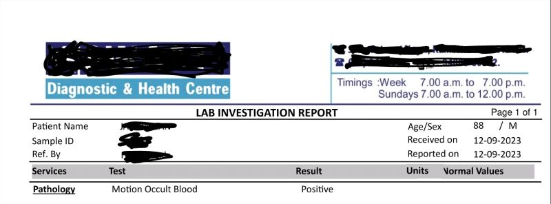

Introduction
Meet an extraordinary individual, a stalwart at 88, who serves as a living testament to the power of a positive approach to health. In a world often marked by skepticism towards healthcare, he emerges as a beacon of trust. Despite his background as an auditor, he entrusts his well-being to doctors. In turn, they approach his care with compassion and a determination to enrich his life with both health and longevity.
Meet Dr.Sivakumar
Dr. Sivakumar is a diabetic care practitioner based in a tier 2 city in India. His journey began in 2004 when he started capturing digital health records on behalf of his patients at his clinic. This approach significantly reduced the burden on patients who no longer needed to carry physical paper records. Moreover, it enabled Dr. Sivakumar to provide better care by facilitating easy retrieval of vital parameters such as blood sugar levels, pulse, BMI, and blood pressure. Additionally, the digitization of health records allowed him to provide printed prescriptions, which increased patient compliance compared to the traditional method of handwritten prescriptions.
In 2009, Dr. Sivakumar and his team built an electronic medical records (EMR) system for their clinic with the help of a software development company. This implementation resulted in a reduction in operational tasks, freeing up more time for providing enhanced care to patients. By using the EMR system, Dr. Sivakumar was able to identify prescription patterns and deliver faster and more effective medications to his patients. The system also provided the ability to visualize trends in vital parameters and review past performance, enabling him to make prompt and informed decisions in patient care.
Trust in Healthcare Professionals
Our protagonist's story begins with his unwavering faith in healthcare professionals. As an auditor, he has a keen eye for detail and a critical mind.
However, when it comes to his health, he chooses to place his trust in his doctors. This trust is not misplaced. His healthcare providers reciprocate with a commitment to his well-being, treating him with compassion and expertise.
Commitment to Health
Despite encountering minor adverse reactions, his commitment to health remained steadfast. In an era dominated by social media noise and misinformation, he sought clarity on the benefits of statins for long-term prevention of cardiovascular disease. His singular focus on well-being guided his decision-making process.
Although he was averse to low-dose aspirin due to intolerance, he continued with statins. This choice, combined with his disciplined lifestyle, significantly contributed to his extended and healthy life.
Overcoming Health Challenges
Recently, he faced a severe bout of anemia, a condition often perceived as an inevitable decline in old age. However, modern medical investigations uncovered a different narrative: internal bleeding from the gastrointestinal tract.
Swift intervention, including blood transfusions and iron infusions, rectified his anemia. The root cause, gastritis, was identified and addressed. Today, he stands as a testament to the transformative power of contemporary healthcare.
The Role of Data Visualization
Data visualization played a crucial role in his health journey. It unraveled a past episode of anemia that had been rectified without signs of occult bleeding. With the assistance of digital records, the cause of his recent anemia was swiftly pinpointed and remedied. This integration of technology ensures comprehensive and holistic care.
Diax.ai: Empowering Health with Technology
This is where Diax.ai's tools, Diary and Dialog, come into play. Diary empowers individuals to maintain their health records, while Dialog facilitates seamless communication between patients and healthcare providers. Together, they ensure that every piece of the health puzzle is in place.
Diary: Maintaining Health Records
Diary enables patients to compile and maintain their health records comprehensively. By having access to a complete history of their medical conditions, treatments, and outcomes, patients and healthcare providers can make informed decisions. This tool empowers individuals to take control of their health journey, ensuring that vital information is always at their fingertips.
Dialog: Facilitating Communication
Dialog bridges the communication gap between patients and healthcare providers. It allows for secure and efficient sharing of health information, enabling timely interventions and better health outcomes. With Dialog, patients can discuss their concerns, share updates, and receive guidance from their doctors, all within a secure digital environment.
Conclusion
The story of our 88-year-old protagonist is a powerful reminder of the impact of a positive attitude and trust in healthcare. His journey, marked by resilience and faith in modern medicine, underscores the importance of comprehensive and holistic care.
With the integration of technology through tools like Diax.ai's Diary and Dialog, we can ensure that every individual has access to the best possible healthcare. By embracing the right attitude and leveraging cutting-edge technology, we can all strive for a healthier and more resilient future.